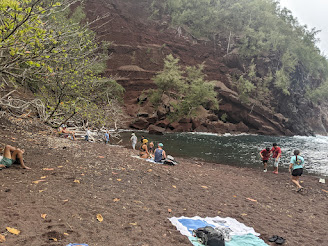
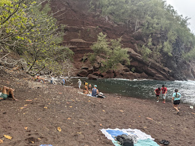
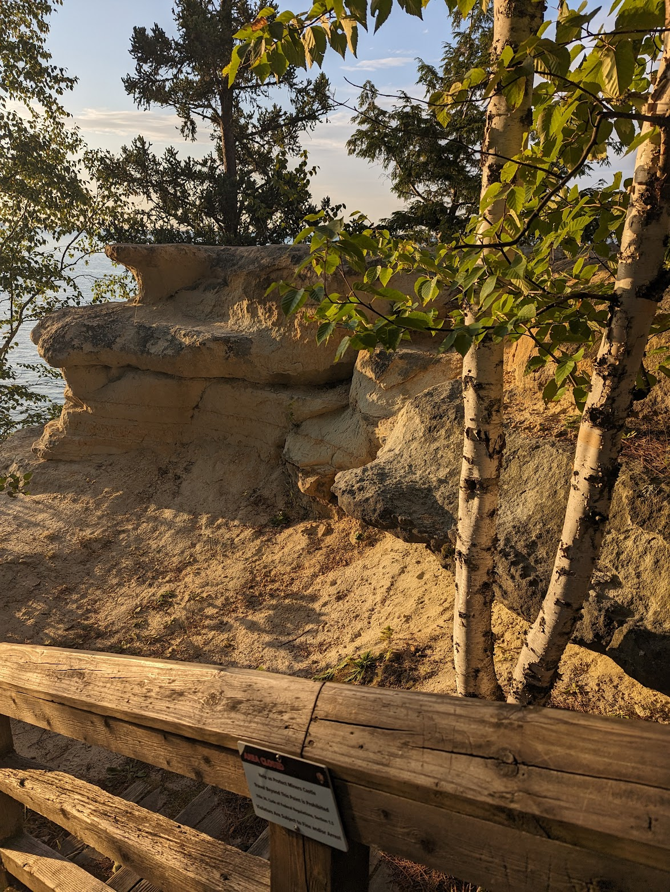
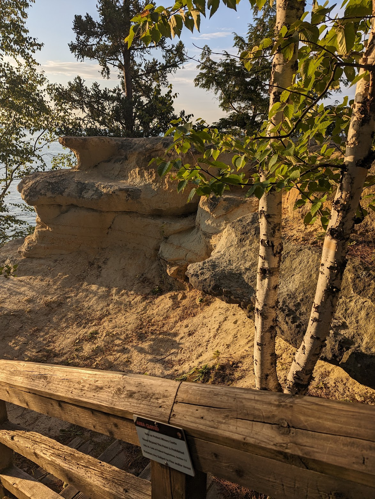

Yellowstone National Park

Geographical Location: Wyoming, United States, North America
Yellowstone National Park is an absolutely gorgeous National Park in the Western United States. There are a number of beautiful springs, and geysers. Often you will see bison, and even bears!
When I went with my family, we stayed at Old Faithfull Inn, and we say Old Faithful errupt! We also saw two baby cubs playing once from our car! We did many hikes, and saw so much beautiful scenery. I loved seeing all the magestic waterfalls.
Photo Gallery


Maui
Geographical Location: Maui, Hawaii, United States (Politically North America, but geographically does not belong to a continent)
Maui is the second largest island in Hawaii. It has gorgeous tropical weather, beautiful and exotic plant life, amazing beaches, and historical sites. There is so much to do in Maui, and every inch seems picturesque.
When I was in Maui, we did so much. We drove the Road to Hana, a twisting and winding long highway through cliffs, to see many beautiful sites. We went to many beaches that looked like how I imagine paradise. We went to the beautiful historic city of Lahaina, which has since been burned terribly by wildfires. We also biked down a volacano! There was so much to do.
Photo Gallery
 

Petoskey

Geographical Location: Michigan, United States, North America
Petoskey is a beautiful town in Northern Michigan, along the shore of Lake Michigan. Petoskey is known for it's beautiful beaches, and the unique stone found along the beaches, called Petoskey stones. Petoksey also boasts scenic forests, and a lovely historic town.
We love to go to Petoskey every summer. The beaches are beautiful, the weather is not too hot, and I love to look for Petoskey stones. We have been going to Petoskey most summers for many generations, as my recent ancestors used to summer up there, and our extended family shares a cottage. There are also many nearby attractions to see!
Photo Gallery
 
